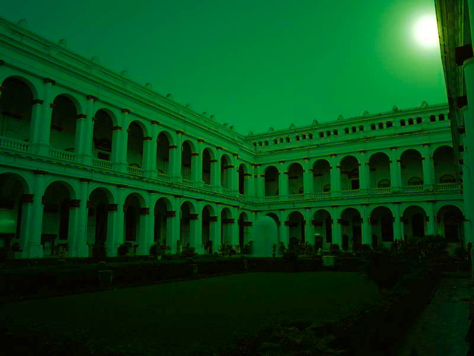
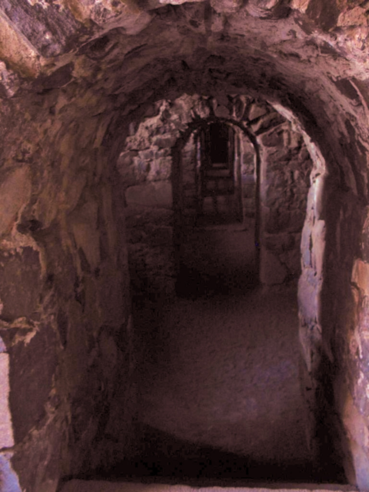

National Library is the place for all book lovers. People engage themselves in reading autobiographies, ancient history books, scientific books as well as ghost stories. People are as as much interested in the ghost stories as they are in reading other kind of books. This treasure trove of books attracts book lovers in good numbers who spend long hours at the library living in their own fantasy world.
Belvedere House as the National Library building was known during the Raj was among the many buildings Mir Jafar built in Alipore in the 1760s after he was forced to abdicate his throne in Murshidabad. He gifted it to the first Governor General of India, Lord Warren Hastings. What happened to the house between 1780, when Hastings is said to have sold it, and 1854, when it became the official residence of the Lt Governor of Bengal, is uncertain. But from 1854 to 1911, Belvedere housed a number of Lt Governors till the British capital shifted to Delhi. After Independence, the National Library (which was then in Esplanade) was shifted to Belvedere House. Since the Belvedere House is of great architectural and heritage value, the treasure of books has been shifted to a new building on the 30-acre campus while the old building is getting restored.
Spirit of Lady Met Calfe
People said to have witnessed the spirit of Lady Met Calfe out there in the library. The corridors of the National Library has been experiencing the ghost of the lady. There have been testimonials from the people those who experienced it and are a proof to support the idea that the library is indeed haunted. This story has been going on past a long time and people have been reporting that the presence of somebody is felt all the time who keeps an eye on them. Several people will tell you that they felt as if someone was breathing down their neck when they were reading alone. This feeling is said to be amplified if you don’t keep a book in its rightful place. There have also been reports of people hearing footsteps near them, but seeing nobody. It’s not only readers, but even librarians have complained of seeing chairs being drawn away; chairs on which they were sitting along with hearing sounds of ruffling pages and books being dropped.
The secret chamber…A Connection?
The archaeological survey of India discovered the mystery of the Hidden Chamber at the National library in the year 2010. It is a place in the 250 years old premises about which people had no clue. The room has no openings or even trap doors. This untouched place for around two centuries definitely brings an eerie feeling. It has been rumoured that the Chamber was a torture room in the times of the British rule in India or maybe a sealed tomb for the souls who were unfortunate.
Another Story
National Library has always been reputed to haunted. Now, here is a really eerie secret. A mysterious room has been discovered in the 250-year-old building a room that no one knew about and no one can enter because it seems to have no opening of kind, not even trapdoors.
The chamber has lain untouched for over two centuries. Wonder what secrets it holds. The archaeologists who discovered it have no clue either, their theories range from a torture chamber, or a sealed tomb for an unfortunate soul or the most favoured of all a treasure room. Some say they wouldn't be surprised if both skeletons and jewels tumble out of the secret room.
Belvedere House as the National Library building was known during the Raj was among the many buildings built in Alipore in the 1760s after he was forced to abdicate his throne in Murshidabad. He gifted it to the first Governor General of India,Lord Warren Hastings . What happened to the house between 1780, when Hastings is said to have sold it, and 1854, when it became the official residence of the Lt Governor of Bengal, is uncertain. But from 1854 to 1911, Belvedere housed a number of Lt Governors till the British capital shifted to Delhi.
After Independence, the National Library (which was then in Esplanade) was shifted to Belvedere House. Since the Belvedere House is of great architectural and heritage value, the treasure of books has been shifted to a new building on the 30-acre campus while the old building is getting restored.
The ministry of culture that owns the National Library decided to get the magnificent building restored by the Archaeological Survey of India since it is heavily damaged. Work has already started. It was while taking stock of the interior and exterior of the building that ASI A lot of effort has been made to locate an opening so that experts can find out exactly what it was built for or what it contains. But there is not a single crack to show.
"We've searched every inch of the first floor area that forms the ceiling of this enclosure for a possible trap door. But found nothing. Restoration of the building will remain incomplete if we are not able to assess what lies inside this enclosure," said deputy superintending archaeologist of ASI, Tapan Bhattacharya. "We've come across an arch on one side of the enclosure that had been walled up. Naturally speculations are rife," said another archaeologist.
Was it used as a punishment room by Hastings or one of the Lt Governors who succeeded him? It was common practice among the British to "wall up" offenders in "death chambers". Some sources say this enclosure has exactly the same look and feel. The British were also known to hide riches in blind chambers as this.
"It could be just about anything. Skeletons and treasure chests are the two things that top our speculations because it is not natural for a building to have such a huge enclosure that has no opening. We cannot break down a wall, considering the importance of the building. So we have decided to bore a hole through the wall to peer inside with a searchlight," said D V Sharma, regional director, ASI.
National Library authorities have written to the ministry of culture seeking permission for this. "The ASI cannot drill into a building of such great historical significance as this without permission. So we facilitated this as caretakers of the building," said director of National Library, Swapan Chakravorty.
The matter of the blind enclosure was recently raised in a meeting of the committee of experts that has been formed by the Centre to advise the ASI on restoration related matters of the National Library. "The ASI raised the issue of the enclosure in the last meeting of the committee. We are eagerly awaiting the first look inside," said historian Barun De, chairman of the committee.
THE END
Thanks,
Feel The Fear